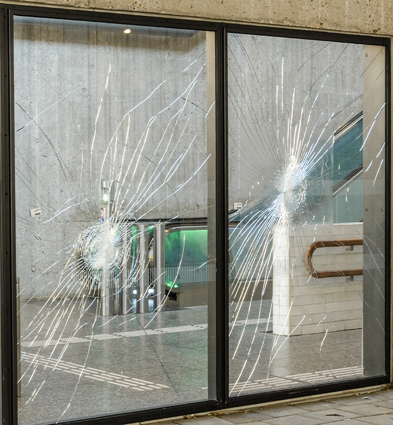
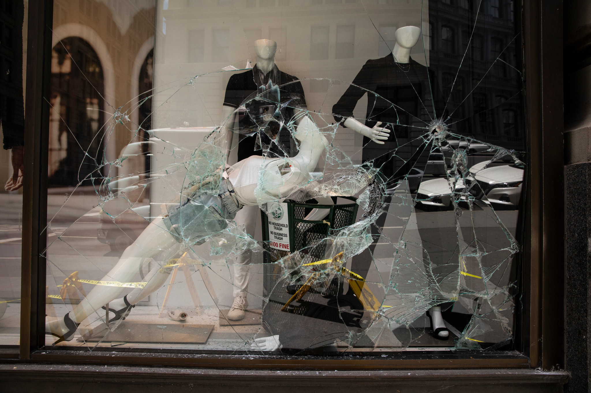
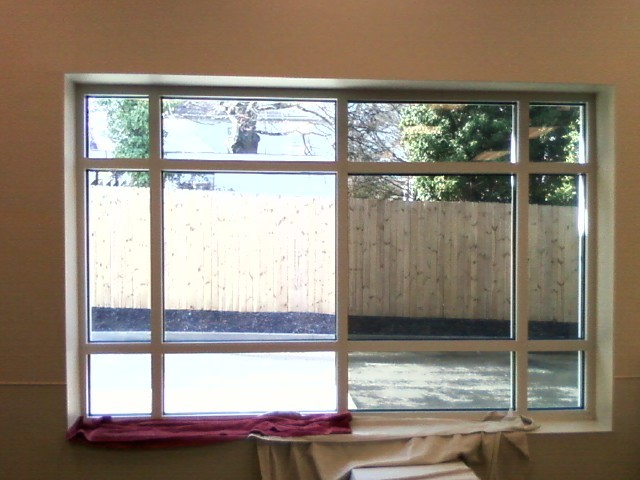
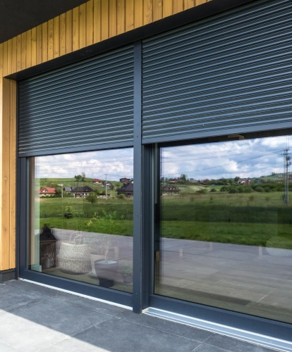
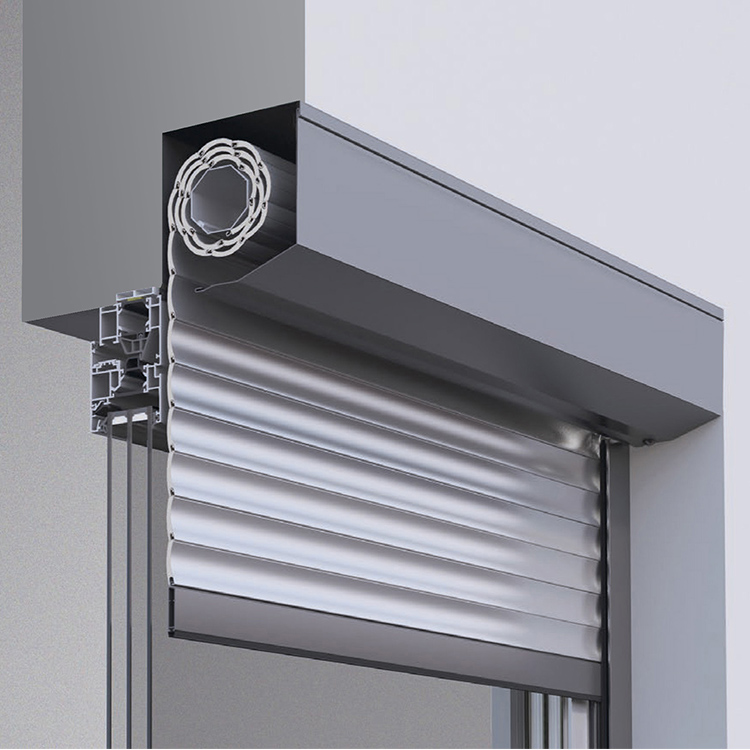
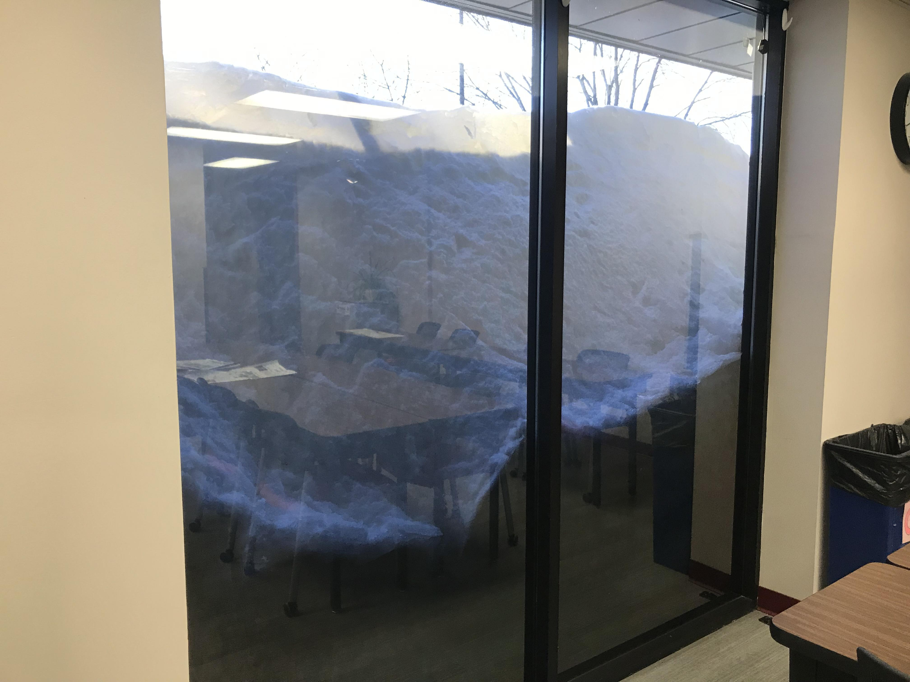

Strengthen your glass with invisible protection — built to stop intruders, weather, and time.
Security film is one of the most effective ways to reinforce vulnerable glass. By bonding directly to the window, it holds shattered glass in place, making it significantly harder for intruders to gain entry. This layer of protection gives homeowners and businesses peace of mind, knowing their property and people are safer against break-ins, vandalism, or unexpected riots.
At SHIELD X DEFENSE, we install industry-leading film for homes, businesses, and storefronts — designed to withstand break-ins, extreme weather, and harmful UV rays, all while keeping a professional, clean look.






Engineered for strength, reliability, and ease of use — protection at the push of a button.
At SHIELD X DEFENSE, we deliver the best rolling security shutters in the business—engineered for unmatched strength, reliability, and ease of use. With just the click of a button, our shutters secure your storefront, home, or office against intruders, riots, severe weather, and prying eyes.
Backed by a lifetime warranty and one-time installation, SHIELD X DEFENSE shutters are the ultimate investment in security, privacy, and peace of mind.
With SHIELD X DEFENSE Security Film, you don’t just get protection—you get peace of mind. Contact us today to schedule a free consultation and see how we can help protect your property.
Our state-of-the-art security film is one of the thickest and strongest on the market, designed to transform standard glass into a powerful barrier. We offer two levels of protection: reduce entry, providing 5–10 minutes of resistance, and Anti-Smash & Grab, offering 15–20 minutes of defense against forced entry. Unlike costly replacements, our film installs seamlessly onto your existing windows, giving you cutting-edge protection without the expense or disruption of new glass. With SHIELD X DEFENSE, your building’s weakest point becomes its strongest line of security.